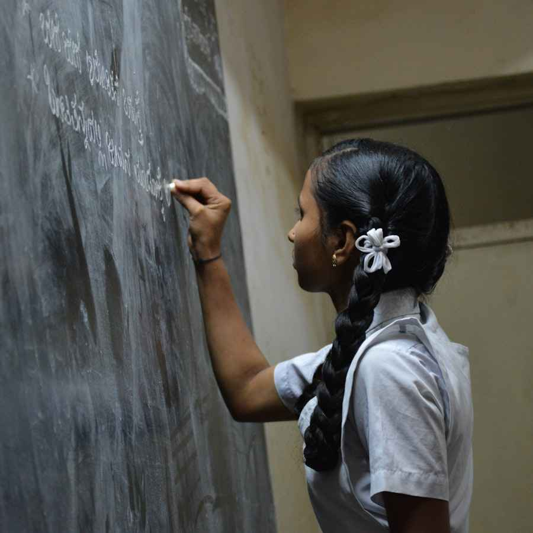

Primary Education
Government-funded primary education is provided to children the Right to Education Act, 2009.

Secondary Education
Secondary education typically covers grades 9 to 12.
Higher Secondary Education
Also known as senior secondary education, this level includes grades 11 and 12.